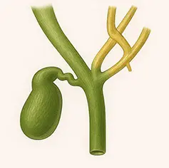

B1: El segmento IV se conecta con el conducto hepático izquierdo.
B2: El segmento IV se conecta con el conducto hepático común, separado de los segmentos II y III
B3: El segmento IV se conecta con el conducto hepático anterior derecho.
B4: El segmento IV se conecta con el conducto hepático común.

B5: El segmento IV se conecta al segmento II o a otros segmentos.